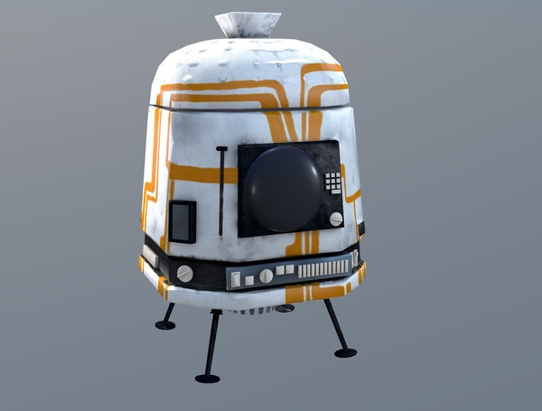

FLDSMDFR
The Flint Lockwood Diatonic Super Mutating Dynamic Food Replicator, or FLDSMDFR for short, is the machine was created by Flint Lockwood, so it could make food for Swallow Falls, an island that was forced to eat sardines and only sardines after their prime source in income, a Sardine Cannery, shut down. The FLDSMDFR was originally designed to be a household appliance for the kitchen, similar to a microwave or a combi oven. At first glance, on the front you see it’s main screen. To the right is a key pad similar to that of a microwave in which it displays orders and chosen foods in production and has a control panel underneath the screen to adjust the flavor and texture the flavor control panel is also used to open the machine's USB port. To the left of the screen, a lever similar to a toaster oven can be seen that is raised and lowered for the level of water that the machine is set to intake. The FLDSMDFR converts water molecules into food molecules through microwave radiation. the FLDSMDFR's Radiation Matrix produces the microwave radiation that creates the Nano-Mutation effect, which is needed to reorganize the molecular structure of water into food and later into sentient food. It's orders are released by a set of rubber flaps deemed the "chow-plopper" by Flint.
